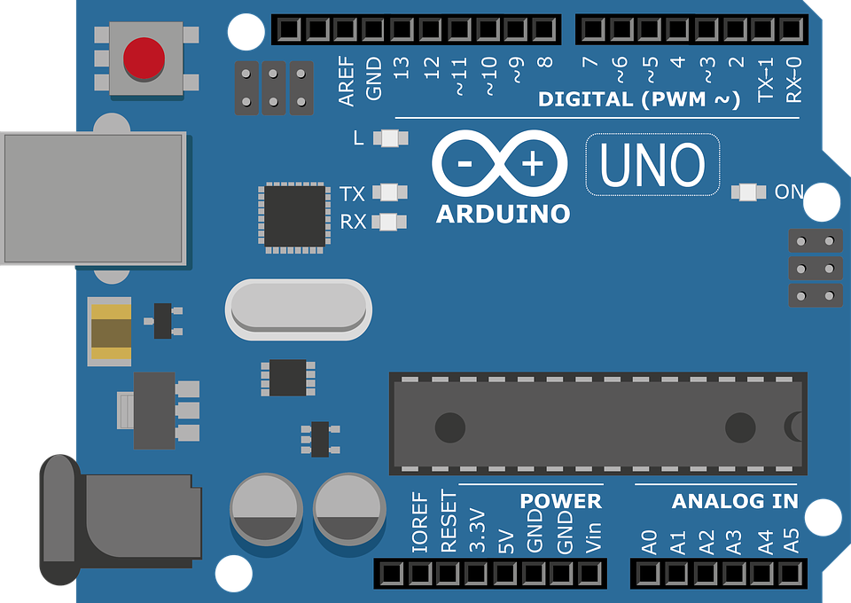
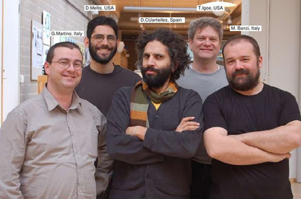
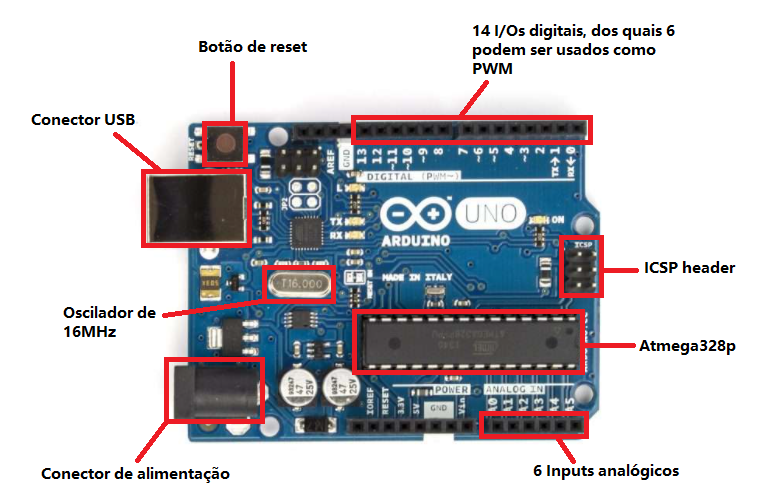

É muito possível que o leitor já tenha ouvido falar de Arduino, mas você sabe de
fato o que é um Arduino? Quando foi inventado? Quais suas principais funções
dentro de nossa sociedade? Qual sua importância dentro do mundo da
eletrônica? Leia nosso post até o final e descobrirá, pois hoje destrincharemos
todos os detalhes dessa tecnologia revolucionária, o Arduino.

Em poucas palavras, Arduino é uma plataforma de desenvolvimento de
projetos eletrônicos (ou prototipagem eletrônica, como também é
comumente dito), constituída tanto de hardware e software.
O principal componente de uma placa Arduino é seu microcontrolador, que nada
mais é que um pequeno processador de computador montado em uma placa
com diversos outros componentes que manipulam sua entrada e saída, e o
propósito para isso é tornar mais fácil para você conectar o mundo físico ao seu
redor com o mundo digital
Ele está disponível por meio da licença Creative Commons Attribution Share-Alike license.
Isso quer dizer que todos os arquivos de design do projeto Arduino estão
disponíveis gratuitamente na internet e que seu software e hardware são open-
source, ou seja, qualquer um pode desenvolver sua própria linguagem ou placa de
Arduino e vender sem pagar royaties, desde que não contenha a logo oficial do
Arduino.
No vídeo abaixo você vai descobrir o que é Arduino e para o que serve. Confira!
Como e quando surgiu?
Antes de chegarmos no Arduino, temos que abordar a criação da linguagem que
inspirou essa plataforma: o Wiring. Desenvolvido por Hernando Barragán, essa
linguagem foi formulada em sua tese de mestrado no Instituto Design de Interação de Ivrea (IDII). O objetivo da tese era tornar mais fácil para artistas e
designers trabalharem com eletrônica, abstraindo os detalhes frequentemente
complicados dessa área para que eles pudessem se concentrar em seus próprios
objetivos.
Estes foram os principais elementos resultantes do Wiring:
Quando a IDII fabricou o primeiro conjunto de placas de Wiring, o custo era
provavelmente em torno de US$ 50,00 cada. Essa queda foi bastante considerável
em relação ao preço das placas que estavam disponíveis, mas ainda era um custo
significativo para a maioria das pessoas.
Em 2005, Massimo Banzi, junto com David Mellis (um aluno do IDII na época) e
David Cuartielles, adicionaram um suporte para o microcontrolador ATmega8 mais
barato à Wiring. Em seguida, eles bifurcaram (ou copiaram) o código-fonte do
Wiring e começaram a executá-lo como um projeto separado, chamado Arduino.
A equipe central inicial do Arduino consistia em Massimo Banzi, David Cuartielles,
Tom Igoe, Gianluca Martino e David Mellis.

As principais razões para se utilizar a plataforma Arduino em seus projetos são as
seguintes:
O Arduino não é a única plataforma de prototipagem eletrônica do mercado.
Existem outros projetos e kits de desenvolvimento, os mais comuns são
o Raspberry Pi e o BeagleBone.
Cada qual utiliza um microcontrolador diferente e possui projeto de hardware com
características próprias. Os preços também variam bastante e algumas outras
plataformas não são tão populares.
A escolha de qual kit de prototipagem utilizar depende das demandas e
necessidades que o seu projeto impõe
